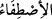
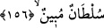
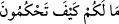

oğullara tercih mi etmiş!”
“
”, bir şeyin saf, öz ve hasını kendine almaktır. Yani, acaba Hak Teâlâ sizin
hoşlanmadığınız kızları, övünme ve arkalanma sebebiniz olan oğullara mı tercih etti,
demektir.
154, 155, 156. Ne oluyor size? Nasıl hükmediyorsunuz? Hiç düşünmüyor
musunuz? Yoksa sizin açık bir deliliniz mi var?
Bu dâvâ ve iddiâda “Ne oluyor size?” Kâşifî der ki: Size ne oldu ki böyle taksim
edersiniz? Bâtıl olduğuna aklın zorunlu olarak hükmettiği bu hükümle bütün âlemlerden
gani olan Allah hakkında “Nasıl hükmediyorsunuz?” Bundan vazgeçiniz! Zira bu zulüm
ve haksızlıktır. Nasıl hüküm veriyorsunuz, kendiniz için kabul etmediğiniz kızları
Allah’a nasıl nispet ediyorsunuz?
İbn Şeyh der ki: “
” terkibindeki istifham cümlelerinin, irap
bakımından birbirleriyle bir bağlantısı yoktur. Allah Teâlâ önce istifham-ı inkârî olarak
onlar nezdinde sabit ve yerleşmiş durumu soruyor; sonra iki cinsten güzel olanının
kendilerine, hasis ve bayağı olanının da Allah’a ait olduğu yolundaki bu fasit ve bozuk
hükümlerini hayretle soruyor.
“Hiç düşünmüyor musunuz?” Yani bunun bâtıl olduğunu anlamıyor musunuz? Ki bu
durum zeki ve gabi/ahmak her akıla yerleştirilmiştir. Yani her akıl sahibi bunu
anlayabilir.
“Yoksa sizin” meleklerin Allah’ın kızları olduğuna dair size gökten inen “açık bir
deliliniz mi var?” Zira bu hükmü vermek için hissî yahut aklî bir delil ve dayanak
gereklidir. Hissî ve aklî hiçbir dayanak olmayınca o zaman naklî bir delil gereklidir.
Sonra Allah Teâlâ başka bir susturma metoduna intikal edip şöyle buyurdu:
157. Doğru sözlülerden iseniz, kitabınızı getirin!
“Doğru sözlülerden iseniz” dâvânızın doğruluğunu konuşan “kitabınızı getirin!”
Yani o halde o indirilmiş kitabı getirin, demektir.
Sonra Allah Teâlâ onların cevap vermekten kesildiklerini hitap derecesinden
düştüklerini artık onlardan yüz çevirip onların bu cinayetlerini başkalarına hikaye etmek